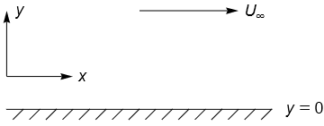

3.9. Scaling arguments¶
In this section:
How does non-dimensionalisation help experimenters and theoreticians?
What is measured by each of the Froude, Strouhal and Reynolds numbers?
What can scaling arguments tell us about biological life at microscopic scales?
3.9.1. Non-dimensionalisation¶
We now return to the Navier-Stokes (NS) equations, given in Section 3.8.4. The quantities involved in these equations contain units of length, time, and force. The presence of these different units makes it difficult to compare different scenarios, such as a full-size aeroplane wing and a small scale replica. It is not immediately obvious from the dimensional form of the NS equations that decreasing the characteristic length scale or velocity scale of the problem has the same effect as increasing the fluid viscosity.
In this section, we introduce new non-dimensional versions of each quantity appearing in the NS equations, by scaling them with respect to characteristic units of measure. We then gather together the characteristic units in the NS equations to form dimensionless parameters such as the Reynolds number. We can use such dimensionless parameters to compare different geometries and to make inferences about the relative importance of different dynamic effects such as viscous diffusion, body forces or inertia.
3.9.1.1. Technique¶
We introduce non-dimensional variables using a characteristic length scale \(L\), velocity \(U\), time \(T\), pressure \(P\) and body force \(g\):
Making these substitutions gives:
The following dimensionless parameters now appear in the normalized momentum equation. If any of these quantities is large/small then we may construct an approximate solution by neglecting relevant terms in the equation.
Name |
Value |
Measurement ratio |
|---|---|---|
Strouhal number |
\(\mathrm{St}=\frac{L}{TU}\) |
\(~\frac{\text{local acceleration}}{\text{convective acceleration}}\) |
Reynolds number |
\(\mathrm{Re}=\frac{UL}{\nu}\) |
\(~\frac{\text{inertia}}{\text{viscous effects}}\) |
Froude number |
\(\mathrm{Fr}=\frac{U}{\sqrt{gL}}\) |
\(~\frac{\text{inertia}}{\text{body force}}\) |
Clarification
The measurement ratios are understood by referring to the dimensional equations. For example, we have
inertial term: \(\underline{u}.\nabla\underline{u} =\mathcal{O}(U^2/L)\)
viscous term: \(\nu\Delta\underline{u} =\mathcal{O}(\nu U/L^2)\)
Thus, the ratio of inertial\(/\)viscous terms is \(\mathcal{O}\left(\frac{U^2/L}{\nu U/L^2}\right)=\mathcal{O}(\mathrm{Re})\).
3.9.1.2. Froude number¶
The Froude number is named after William Froude (1810-1879), who was an English engineer, hydrodynamicist and naval architect. It is used to study surface waves on flows of finite depth, such as open channel flows, spillways and weirs. It has a role comparable with that of the Mach number that we saw for incompressible flows. When \(Fr<1\) the velocity of surface gravity waves exceeds the characteristic flow velocity and so a wave caused by an obstruction in the flow can travel upstream. This is referred to as the subcritical case. When \(Fr>1\) waves cannot be propagated upstream and this is referred to as the supercritical case. Transition from a supercritical to a subcritical state leads to the formation of a hydraulic jump, characterised by a sudden rise in water surface elevation.
The Froude number is also relevant in the design of ships’ hulls, where the characteristic length and velocity scales are taken to be the hull length and the speed with which it moves through the water. Transverse waves are generated in the wake by extracting energy from the ship’s motion. This wavemaking resistance is a form drag, distinct from viscous drag. The amount of drag is proportional to the amplitude of the waves, which increases with the Froude number up to a critical value beyond which it falls effectively to zero. A tremendous amount of propulsion is required to exceed the critical Froude number.
3.9.1.3. Strouhal number¶
The Strouhal number is named afer the Czech physicist Vincenc Strouhal (1850-1922), who first investigated the “humming” or “singing” of telegraph wires in 1878. It is used in the study of flows characterised by periodic motion, such as the shedding of vortices from alternate sides of a bluff body in a Von Kármán vortex street. We take \(f=1/T\) to be the frequency of the oscillations. This frequency is usually determined from experiment or numeric simulation. The vortex street is a viscous phenomenon and the Strouhal number depends on the Reynolds number. It is found to be close to 0.2 for a wide range of Reynolds numbers. Periodic vortex shedding leads to periodic changes in the pressure distribution, which can cause vibrations of cables and other structures. This dynamics was involved in the well know Tacoma Narrows disaster. Nowadays, wind tunnel testing is used in the design of structures such as supertall buildings to reduce the effects of vortex shedding.
The Strouhal number has also been used in the experimental study of swimming and flying animals, where the relevant scales are the frequency and amplitude of flapping, and the background flow rate
3.9.1.4. Reynolds number¶
The Reynolds number was named after Osborne Reynolds (1842–1912). He was not the first person to introduce this non-dimensionalisation, but did popularise its use through his work. Reynolds famously conducted experiments to investigate the behaviour of water flowing through a pipe under carefully controlled conditions. By injecting a layer of dye into the water he showed that at low flow rates the fluid could be made to maintain a smooth, “laminar” flow structure, whilst at higher flow rates the fluid would exhibit a spontaneous transition to a turbulent, disorganised state. The transition from a laminar to a turbulent state occurs in a manner that can be predicted by experiment, but the underlying mechanism governing the transition is still not fully understood. The Reynolds number indicates the relative importance of inertial and viscous effects. It provides a way to easily make comparisons between experiments that use different fluids (viscosities) or differently sized apparatus.
Example
Consider a hypothetical experiment in which fluid flows through a long channel between two walls. We might take the characteristic velocity to be the average velocity determined by the mass flow rate, and take the characteristic length to be the distance between the walls (or maximum distance if they are curved).

Now suppose we wish to repeat the experiment with the walls moved further apart. The geometry of the problem remains otherwise the same and so the only change in the non-dimensionalised problem is an increase in Reynolds number. The effect of moving the walls further apart is identical to that of increasing the velocity or decreasing the viscosity. This allows experimenters to use reduced scale models to investigate fluid phenomena such as aerodynamic performance, by substituting the fluid for a more viscous one. Broadly speaking, we can use a single parameter to compare results between multiple experiments.
The Reynolds number is sometimes used in conjunction with other non-dimensional quantities. For instance, the Froude and Reynolds numbers may be used together to model the transition from laminar to turbulent flow in open channels or to model the combined effects of viscous and non-viscous drag.
Exercise 3.16
An incompressible fluid of uniform density \(\rho\) and viscosity \(\nu\) flows steadily past a long, flat plate at \(y=0\), which is parallel to the free stream velocity \((U_{\infty},0)\) as shown.

{kind=link}
Write down the complete two-dimensional Cartesian equations of motion for the velocity components \((u,v)\) in scalar form.
Then, assuming there is no pressure gradient in the downstream direction, rewrite the \(x\)-component of the conservation of momentum equation in terms of non-dimensional variables
where the unspecified dimensional constants \(L\), \(\delta\), are characteristic length scales of the motion in the horizontal and vertical directions. Show that the resulting equation may be written as
Identify the convective terms and the inertial terms in equation (*), given above. Assuming that the Reynolds number \(R\) is large, which of the four terms of this equation do you expect to balance and which can be neglected?
3.9.3. Low Reynolds number flow¶
If the Reynolds number is very small (e.g. for very viscous flows) then we can neglect the inertial terms \(\underline{u}.\nabla\underline{u}\) to leave
If we are interested in steady solutions in the absence of a body force, the system reduces to the equation for Stokes flow (creeping flow):
The flow governed by this pair of equations exhibits the fascinating property of reversibility. If the boundary conditions conditions applied to the fluid are reversed, the fluid particles will return back along their previous paths. A striking demonstration of this phenomenon can be found at this link
This has important implications for the swimming of microcellular organisms, which are unable to propel themselves using flapping or “paddling” motions. The finding is known as the scallop theorem, since the opening and closing swimming mechanism used by scallops would be ineffective at low Reynolds numbers.
See also
Organisms that inhabit a low Reynolds number world employ a variety of exotic swimming techniques to overcome these limitations, such as the use of corkscrewing flagella. Discussion can be found in a delightful, original paper on Life at Low Reynolds Numbers by E.M. Purcell.
I also recommend watching a portion (from 25:00) of this lecture by the legendary fluid dynamicist G.I. Taylor, given over half a century ago.